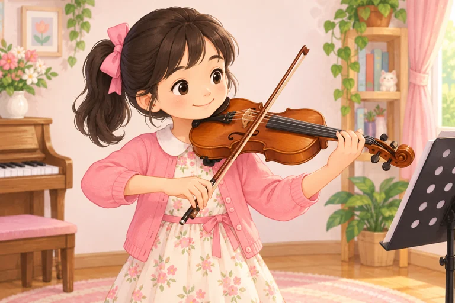
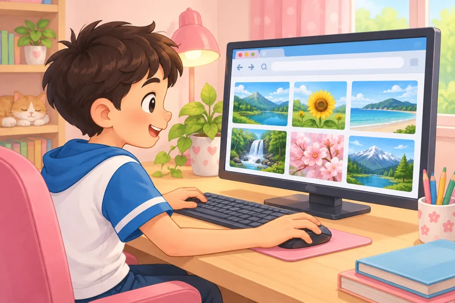
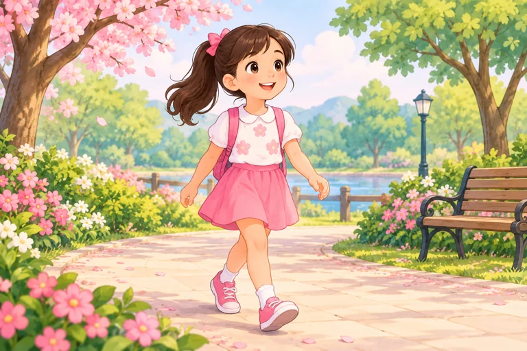
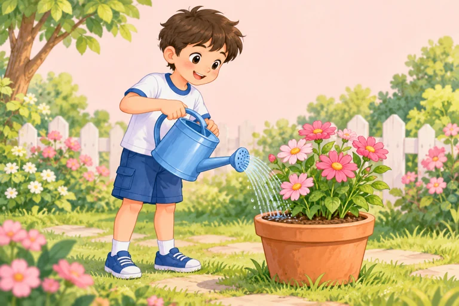

play the violin
chơi đàn vi-ô-lông
PLAYTHEVIOLIN
I play the violin at the weekend.
Chưa đánh dấu
Unit 4 · Học trước, thử nhớ rồi luyện đề
Học hoạt động lúc rảnh, nói điều em thích và thói quen cuối tuần.
Giọng có sẵn trên thiết bị. Thiếu giọng Anh thì em vẫn xem chữ và luyện viết được.
Bấm Nghe khi em sẵn sàng. Trang không tự phát âm thanh.
Nghe cả từ/cụm, đọc theo rồi dùng ABC để nhớ cách viết. ABC đọc tên chữ cái, không phải bài luyện âm. Với cụm nhiều từ, các nhóm chữ được tách riêng.
Chưa có từ cần ôn. Em chọn một nhóm rồi bấm “Cần ôn lại” ở từ muốn luyện thêm nhé.

chơi đàn vi-ô-lông
I play the violin at the weekend.
Chưa đánh dấu

lướt Internet
I surf the Internet at the weekend.
Chưa đánh dấu

đi dạo
I go for a walk at the weekend.
Chưa đánh dấu

tưới hoa
I water the flowers at the weekend.
Chưa đánh dấu
đọc truyện
I read stories at the weekend.
Chưa đánh dấu
đạp xe
I ride my bike at the weekend.
Chưa đánh dấu
nghe nhạc
I listen to music at the weekend.
Chưa đánh dấu
chơi đàn vi-ô-lông (dạng V-ing)
I like playing the violin.
Chưa đánh dấu
lướt Internet (dạng V-ing)
I like surfing the Internet.
Chưa đánh dấu
đi dạo (dạng V-ing)
I like going for a walk.
Chưa đánh dấu
tưới hoa (dạng V-ing)
I like watering the flowers.
Chưa đánh dấu
luôn luôn
I always read stories at the weekend.
Chưa đánh dấu
thường thường
I usually read stories at the weekend.
Chưa đánh dấu
thường xuyên
I often read stories at the weekend.
Chưa đánh dấu
thỉnh thoảng
I sometimes read stories at the weekend.
Chưa đánh dấu
hiếm khi
I rarely read stories at the weekend.
Chưa đánh dấu
không bao giờ
I never read stories at the weekend.
Chưa đánh dấu
Nghe hội thoại rồi đọc theo. “Đến lượt em” chỉ đọc A để em nói câu trả lời của B.
A: What do you do at the weekend?
B: I read stories and listen to music.
Bạn làm gì cuối tuần? — Đọc truyện và nghe nhạc.
A: Do you water the flowers at the weekend?
B: Yes, I do.
Bạn có tưới hoa cuối tuần không? — Có.
A: What do you like doing in your free time?
B: I like playing the violin.
Sau like dùng V-ing trong mẫu của Unit này.
A: What does she like doing in her free time?
B: She likes going for a walk.
Câu khẳng định She likes; câu hỏi does she like.
A: What do you do at the weekend?
B: I usually water the flowers.
Usually đứng trước động từ thường water.
A: Do you surf the Internet at the weekend?
B: No, I do not. I never surf the Internet at the weekend.
Never nghĩa là không bao giờ; không thêm don’t vào câu I never surf…
Ví dụ tự soạn. Vị trí và sở thích là giả định theo từng ví dụ. Trang không thu âm hoặc tự chấm giọng của em.
Mỗi nhóm có bốn bài nhỏ, không giới hạn thời gian. Em được sửa rồi thử lại. Câu trả lời tự lưu để quay lại làm tiếp.